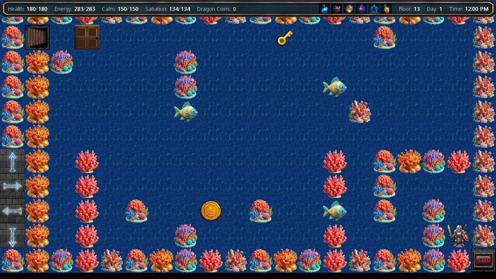
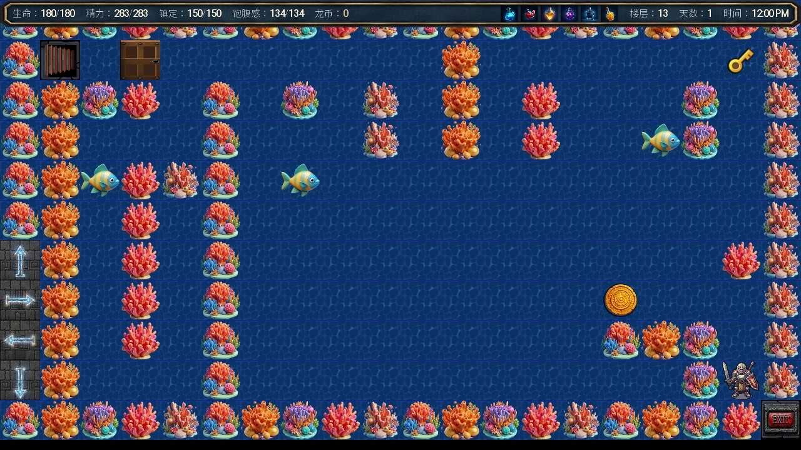

Select a screenshot to enlarge it. Screens show example inventories and progress.
Spend time where it solves a current problem
You do not need to finish every route in one sweep. Pick an immediate goal—an entrance, a lesson, a worker or an upgrade—then check its location, hours, relationship and resources before travelling. The Quest Log and individual character guide are better starting points than repeatedly trying a locked action.
Keep a separate manual save before a major purchase, optional reset or unfamiliar challenge. Use the current Getting Started guide for an opening route and the FAQ for quick answers.
Build a useful daily loop
- Check the next opening window. Group visits by era and district; an NPC can have different hours at different places. Moving between buildings or waiting can consume time.
- Restore the resource you actually lack. Food, Medicine, Energy Items and Comfort restore different resources. Supplies and personal Inventory are separate screens; see Items.
- Choose sustainable income. Work builds Working Experience. Compare actual pay, resource costs and matching equipment in the Wealth Guide before funding expensive projects.
- Collect completed rewards. Tutorial claims, business reports, investment returns and unlocked arcade prizes use their own collection controls. Completion and collection are separate.
- End with a clear next step. Check unfinished prerequisites rather than assuming ordinary affection, faction Clout, Army EXP and minigame progress are interchangeable.
Before repeating a blocked action
Check the exact location and opening hours, then the previous event, relationship stage, required item and content-access message. Two NPCs can share a location; use the portrait-switch control when it appears. A dark or missing action can mean a completed one-time service, a daily limit, an already-owned skill or a different prerequisite—not simply insufficient money.
Lesson requirements can differ from a skill catalogue entry. Skills distinguishes named lessons, Gonzo’s eligible books and Crystal Enlightenment. For a map destination reached through another building, use the approach listed in Locations.
Community route: Floor 13 Dragon Coins
Original community tip: Larsun. The useful part remains: revisit the water floor for a new underwater coin, then trade coins with Gonzo. Treat it as an optional repeatable dungeon activity, with travel, hunger and encounter costs.
- Prepare. Reach normal Dungeon floor 13, learn Swim and be able to handle its water encounters. Bring recovery supplies. Negotiation is optional; it reduces Gonzo’s Crystal price from 25 Dragon Coins to 23.
- Enter a fresh floor 13. Its water layout places an underwater coin. Inspect the route before moving, collect the coin, then leave when ready. Re-entering through floor selection generates a new maze; returning from an encounter to the same maze does not refill a collected tile.
- Repeat while it is worthwhile. Recover resources and check the date. Water steps can trigger encounters, so this is not a guaranteed safe or fixed-duration loop.
- Find Gonzo on a suitable ordinary floor. Early ordinary floors such as 2–5 are convenient places to look for his merchant tile. He is randomly placed, not guaranteed on each map. Reach him and choose the Crystal purchase when you have the required coins.
Gonzo also sells weapon and armor upgrades and eligible random skill books. Save enough coins for the purchase you actually want; his shop does not spend them automatically.

Calculate the current movement cost
| Active modifiers | Minutes per normal step | 20-step example |
|---|---|---|
| Neither | 4 | 80 minutes |
| Time effect only | 3 | 60 minutes |
| Fleet Footed only | 3 | 60 minutes |
| Both | 2 | 40 minutes |
These are movement examples, not a promise that every coin takes 20 steps. Add detours, encounters, return travel and recovery. Standing still to inspect the map does not itself spend movement time.
A Crystal can buy a 10-day extension of the doomsday timer. Whether the coin loop produces a net time gain depends on your actual run. Check remaining time before starting another round; the old “one day spent, nine days gained” estimate is not a guaranteed result.
Decide what the Crystal is for
If the timer is your immediate constraint, extending it can make room for further play. Otherwise compare permanent growth, equipment, resources and New Game+ before buying. Crystal Enlightenment selects from its own eligible pool; it is not a choice of any named skill. Keep the 5-Crystal New Game+ fee in mind if you plan a reset.
Consult Crystals and Doomsday for the source and shop tables. Lillian, Seraph and Sylwithe offer different services; they are not three identical shops. For other steady income, use the Wealth Guide.
把时间花在当前真正需要的地方
不必一次清空所有人物路线。先选一个眼前目标，例如进入某处、学习技能、招募员工或购买升级；出发前核对地点、时段、关系和资源。遇到锁定行动时，先查任务日志与对应人物攻略，通常比反复点击更有效。
安排顺路的日常循环
行动不出现时，先查这几项
先核对具体地点与开放时间，再查上一事件、关系阶段、指定物品和游戏显示的内容访问提示。同一地点可能有多名人物；出现切换头像控件时，可切换当前互动对象。行动变暗或消失，也可能是一次性服务已经完成、达到每日额度、已经学会技能，或缺少其他前置，不能只按钱够不够判断。
课程的实际报名条件，可能与技能目录中的属性要求不同。技能参考分别说明指定课程、Gonzo技能书与水晶启迪。需要先穿过另一栋建筑的地点，可查地点表中的进入路线。
社区方法：第13层收集龙币
原始社区方法由Larsun提供。仍然实用的核心，是重复进入水下楼层收集新龙币，再向Gonzo换水晶。这是一种可选的重复地下城活动，需要计入赶路、饥饿与遭遇成本。
- 先准备。到达普通地下城第13层，学会游泳，并能应付水中遭遇。带足恢复补给。谈判不是必需，但能把Gonzo的水晶价格从25枚龙币降到23枚。
- 进入新生成的第13层。水下迷宫会放置一枚水下龙币。移动前先看路线，取到后按需要离开。从选层界面重新进入，会生成新迷宫；遭遇结束后返回原地图，不会补回已经拾取的龙币。
- 按自己的收益与消耗重复。及时恢复资源并检查日期。水中移动可能触发遭遇，不能把它当作绝对安全、固定耗时的循环。
- 在合适的普通楼层寻找Gonzo。例如第2–5层较早的普通迷宫。商人图块随机出现，并非每张地图都有。走到他身边，龙币足够时选择购买水晶。
Gonzo也出售武器、护甲升级及符合条件的随机技能书。按自己的目标留足龙币；仅进入商店不会自动消费。

按当前移动成本计算
| 生效中的修正 | 普通移动每步 | 走20步的例子 |
|---|---|---|
| 两者都没有 | 4分钟 | 80分钟 |
| 仅有时间效果 | 3分钟 | 60分钟 |
| 仅有步履轻盈 | 3分钟 | 60分钟 |
| 两者都有 | 2分钟 | 40分钟 |
这只是移动成本示例，不代表每枚龙币都只需走20步。还要加上绕路、遭遇、返程和恢复消耗。停下来查看地图，本身不会扣移动时间。
1颗水晶可换取末日倒计时延长10天。这一循环最终能否净赚时间，取决于实际行程。开始下一轮前先查剩余时间，旧攻略中「花1天、净赚9天」不能当作保证。
先决定水晶要用在哪里
如果眼前最紧的是倒计时，先延长时间可以为后续游玩留出空间；否则先比较永久强化、装备、资源与新游戏+的需求。水晶启迪会从符合条件的技能池中随机选择，不能指定任意技能。准备重开时间线时，也要留意新游戏+的5颗水晶费用。
来源和商店对照见水晶与末日倒计时。Lillian、Seraph与Sylwithe的服务不同，不能按同一家商店理解。其他稳定收入方式见财富指南。
Adapted and updated from the community Chronoromancer Wiki. Community source and history · CC BY-SA 4.0. Game images © Chronoromancer Studio.